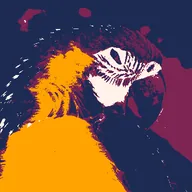

Paletkaart

Zet elke pixel om naar de dichtstbijzijnde kleur in een palet: tot acht kleuren die je kiest, of een palet van tot 512 kleuren uit een voorinstelling of een geïmporteerd bestand. Ditherpatronen mengen naburige paletkleuren om meer tinten te tonen. Alfa mengt de nieuwe kleuren met de originele laag.
Instellingen
| Instelling | Type | Bereik | Standaard |
|---|---|---|---|
| Kleuren uit | Keuze | Kleuren, Palet | Kleuren |
| Kleuren | Getal | 2 tot 8 | 5 |
| Kleur 1 | Kleur | – | #1D2B53 |
| Kleur 2 | Kleur | – | #7E2553 |
| Kleur 3 | Kleur | – | #FF004D |
| Kleur 4 | Kleur | – | #FFA300 |
| Kleur 5 | Kleur | – | #FFF1E8 |
| Kleur 6 | Kleur | – | #FF55FF |
| Kleur 7 | Kleur | – | #FFFF55 |
| Kleur 8 | Kleur | – | #FFFFFF |
| Palet | Palet | – | 16 kleuren |
| Ditherpatroon | Keuze | Geen, Ruis, Dambord, Bayer 2x2, Bayer 3x3, Bayer 4x4, Bayer 8x8, Clusterpunt 4x4, Clusterpunt 8x8, Horizontale lijnen, Verticale lijnen, Diagonale lijnen, Floyd-Steinberg, False Floyd-Steinberg, Sierra Lite, Fan, Shiau-Fan, Jarvis-Judice-Ninke, Stucki, Burkes, Sierra, Two-Row Sierra, Atkinson | Geen |
| Dithering | Getal | 0% tot 100% | 100% |
| Alfa | Getal | 0% tot 100% | 100% |